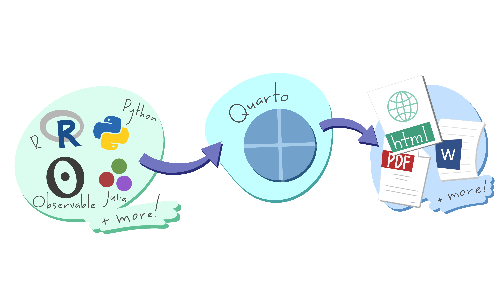
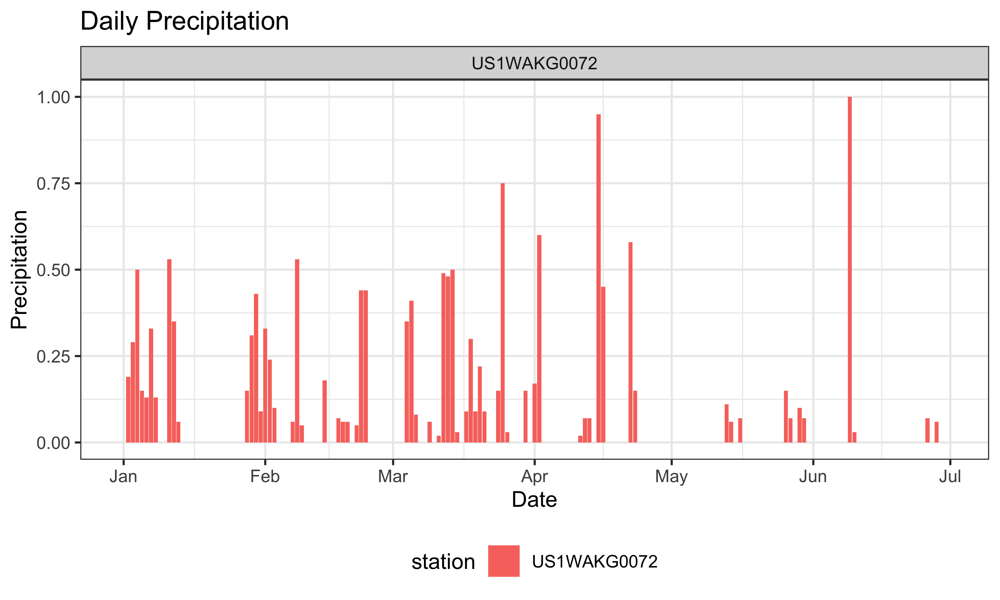

# reading in our NOAA spreadsheet
rainfall_raw <- readr::read_csv("data-raw/precipitation.csv")1 Static output drip
Hey analyst! Welcome to Chapter 1 of 🌧️ Raining Tables 🌧️
Today, we’re taking the first small step using static files: read in precipitation.csv from data-raw/, plot it in a nice chart, and export it as a table. As static files, these outputs are friendly and easily shareable.
This may already be a very familiar process for you, and if so, excellent! All other chapters incrementally replace pieces of this chapter.
NoteWhere files live
Our precipitation.csv spreadsheet lives in data-raw/, not mixed in with our code (R/) or our program outputs (outputs/). That’s deliberate: raw data is a read-only input, not something we’re trying to overwrite. So we never read out to data-raw/.
rainingtables/
├── data-raw/ # folder: read-only inputs, never overwritten
│ └── precipitation.csv
├── R/ # folder; functions
├── outputs/ # folder: outputs written here
└── 01_static-output-drip.qmdKeeping these files separate makes updating a breeze ~ 🪁
When the data refreshes in Chapter 2, we know where to expect file changes.
Read in the raw data
Let’s read in our static csv, data-raw/precipitation.csv.
How are our data structured?
# looking at data structure
str(rainfall_raw)
#> spc_tbl_ [178 × 14] (S3: spec_tbl_df/tbl_df/tbl/data.frame)
#> $ STATION : chr [1:178] "US1WAKG0072" "US1WAKG0072" "US1WAKG0072" "US1WAKG0072" ...
#> $ NAME : chr [1:178] "SEATTLE 4.2 SW, WA US" "SEATTLE 4.2 SW, WA US" "SEATTLE 4.2 SW, WA US" "SEATTLE 4.2 SW, WA US" ...
#> $ LATITUDE : num [1:178] 47.6 47.6 47.6 47.6 47.6 ...
#> $ LONGITUDE : num [1:178] -122 -122 -122 -122 -122 ...
#> $ ELEVATION : num [1:178] 6.7 6.7 6.7 6.7 6.7 6.7 6.7 6.7 6.7 6.7 ...
#> $ DATE : Date[1:178], format: "2026-01-01" "2026-01-02" ...
#> $ DAPR : num [1:178] NA NA NA NA NA NA NA NA NA NA ...
#> $ DAPR_ATTRIBUTES: chr [1:178] NA NA NA NA ...
#> $ MDPR : num [1:178] NA NA NA NA NA NA NA NA NA NA ...
#> $ MDPR_ATTRIBUTES: chr [1:178] NA NA NA NA ...
#> $ PRCP : num [1:178] 0 0.19 0.29 0.5 0.15 0.13 0.33 0.13 0 0 ...
#> $ PRCP_ATTRIBUTES: chr [1:178] ",,N" ",,N" ",,N" ",,N" ...
#> $ SNOW : num [1:178] 0 NA NA NA NA NA NA NA 0 0 ...
#> $ SNOW_ATTRIBUTES: chr [1:178] ",,N" NA NA NA ...
#> - attr(*, "spec")=
#> .. cols(
#> .. STATION = col_character(),
#> .. NAME = col_character(),
#> .. LATITUDE = col_double(),
#> .. LONGITUDE = col_double(),
#> .. ELEVATION = col_double(),
#> .. DATE = col_date(format = ""),
#> .. DAPR = col_double(),
#> .. DAPR_ATTRIBUTES = col_character(),
#> .. MDPR = col_double(),
#> .. MDPR_ATTRIBUTES = col_character(),
#> .. PRCP = col_double(),
#> .. PRCP_ATTRIBUTES = col_character(),
#> .. SNOW = col_double(),
#> .. SNOW_ATTRIBUTES = col_character()
#> .. )
#> - attr(*, "problems")=<pointer: 0x600000c03e50>Let’s clean up the field names using the handy janitor package…
# cleaning field names
rainfall <- rainfall_raw |>
janitor::clean_names()and let’s take a peek at the first five rows.
| station | name | latitude | longitude | elevation | date | dapr | dapr_attributes | mdpr | mdpr_attributes | prcp | prcp_attributes | snow | snow_attributes |
|---|---|---|---|---|---|---|---|---|---|---|---|---|---|
| US1WAKG0072 | SEATTLE 4.2 SW, WA US | 47.57738 | -122.412 | 6.7 | 2026-01-01 | NA | NA | NA | NA | 0.00 | ,,N | 0 | ,,N |
| US1WAKG0072 | SEATTLE 4.2 SW, WA US | 47.57738 | -122.412 | 6.7 | 2026-01-02 | NA | NA | NA | NA | 0.19 | ,,N | NA | NA |
| US1WAKG0072 | SEATTLE 4.2 SW, WA US | 47.57738 | -122.412 | 6.7 | 2026-01-03 | NA | NA | NA | NA | 0.29 | ,,N | NA | NA |
| US1WAKG0072 | SEATTLE 4.2 SW, WA US | 47.57738 | -122.412 | 6.7 | 2026-01-04 | NA | NA | NA | NA | 0.50 | ,,N | NA | NA |
| US1WAKG0072 | SEATTLE 4.2 SW, WA US | 47.57738 | -122.412 | 6.7 | 2026-01-05 | NA | NA | NA | NA | 0.15 | ,,N | NA | NA |
Before we get started, it’s good to familiarize yourself with the data we’re looking at. Read about precipitation data, data field descriptions, and other details at Appendix B.
Now, to our static outputs! ⚡
Today, we’re outputting a simple chart and table, outputs you’d likely circulate once you received data updates. Fortunately, the Quarto format can handle both!
The Quarto format’s quite flexible. We can:
-
Run code in multiple languages. We’re currently running R code, but Quarto can also run Python, Julia, and Observable.
- Output to multiple file types. The standard format is html, but you can also output to Word, PDF, slides, and other file formats.
Quarto report workflows:

Plotting raindrops 🫧
First, we’ll plot precipitation. If a dataset is new-to-us, plots help us explore and learn about it. If we’re already familiar, plots help us identify and follow trends.
The plot code lives in R/plot_rainfall.R rather than here in the chapter. Take a look! Having a separate, standalone function will let us format and output it automatically in Chapter 10.
rainfall_plot <- plot_rainfall(rainfall)
rainfall_plot
Then we save out the plot as a .png in outputs/rainfall_chart_01.png:
ggplot2::ggsave(
filename = "outputs/rainfall_chart_01.png",
plot = rainfall_plot,
width = 8,
height = 5
)Exporting static files
Once we update, we often have to get our data out to a wider audience, who may only be interested in static files, like .csvs, PDFs, or Excel. We’ll also save these out to outputs/ (see R/export_outputs.R for code).
Here’s how we do that:
A csv is our universal, pipeline-friendly format, easy for another script, language, or database loader to pick up:
write_csv(
rainfall,
"outputs/raintable_01.csv"
)Excel is for handoffs to stakeholders who prefer handling Excel files. Since Excel has a more complex format, we’re using the openxlsx package to read out to Excel, rather than a non-proprietary csv file format.
While they’re common outputs, Excel files are uncommon in data pipelines. Multiple sheets, too much styling, embedded formulas all make this format less usable than a simple csv.
openxlsx::write.xlsx(
rainfall,
"outputs/raintable_01.xlsx",
sheetName = "raintable_01"
)A gt table as a PDF gives you a static PDF report, good for presentations and attachments.
PDFs are also common outputs, but you wouldn’t use them in a data pipeline unless your files were handed to you this way and/or you had no other choice. They were never designed to be machine-readable; it’s easy to misread or misinterpret PDF information.
ImportantCheckpoint
Before moving on, check that outputs/ now contains four files: rainfall_chart_01.png, raintable_01.csv, raintable_01.xlsx, and raintable_01.pdf. If any are missing, sec-troubleshooting has the usual suspects.
Static output recap
Starting from a csv sitting in data-raw/, we tidied up its field names, plotted daily precipitation, and exported the results into outputs/.
A big downside: how much work our static drip is to update. Our rain data updates daily, but with our current static data source, we’ll have to redownload and rerun every day.
Next up: rather than read in static files, we’ll pull our rain data directly from NOAA’s API. ⚡
Additional references
Further reading & viewing on scripts, tables, and charts:
| Author | Resource | Description |
|---|---|---|
| Hadley Wickham | R for Data Science 2e | The classic book on R programming reviews all R programming fundamentals, including data viz, cleaning, transformations, and functions. |
| Yan Holtz | The R Graph Gallery | Visual gallery of options for creating plots in R, with code samples |
| Nicola Rennie | The Art of Data Visualization with ggplot2 | Nicola Rennie’s data viz is phenomenal: easy to understand and beautifully formatted. Highly recommend. |